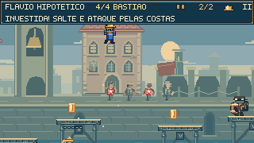
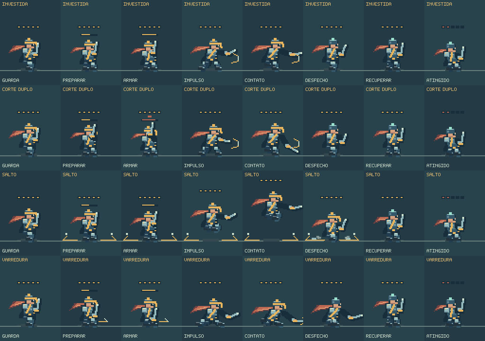
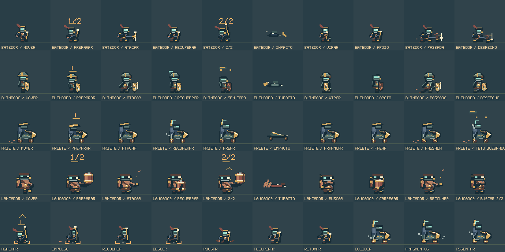
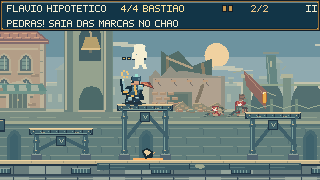
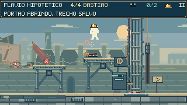

O bastião exige
uma resposta diferente.
O Vanguarda disputa o chão, alcança as sacadas e muda a combinação quando fica ferido. Quatro ataques com preparações próprias, deslocamento mais rápido e aberturas definidas para Feka responder.
Jogar o encontroAssistir ao bastião- Investida
- Corte duplo
- Salto às sacadas
- Varredura baixa
Mais pressão. Aberturas reconhecíveis.
24,4 segundos contínuos do bastião, capturados por entradas de teclado no motor nativo. Incluem uma derrota e a retomada. Sem áudio; controles de toque e tremor desativados para a captura. Posição, vida, câmera e tempo da cena seguem o jogo.
Combinações que pedem decisões
A investida cobre mais terreno. O corte duplo conserva uma segunda preparação. A nova varredura passa rente ao chão e pede salto ou uma sacada. Ferido, o Vanguarda pode ligar a investida à varredura ou procurar uma plataforma após o corte.
Uma abertura depois da ameaça
Cada combinação tem no máximo dois golpes e termina em recuperação. O detalhe do capacete muda de dourado para verde-claro quando ele fica exposto. Cinco pontos de resistência; a pancada descendente continua retirando dois.

A arena participa da luta.
As quatro sacadas foram reposicionadas, com alturas entre 32 e 60 pixels acima do piso. O lançador ocupa a estrutura da direita. A aproximação e o enquadramento permitem observar os perigos abaixo durante os saltos comuns.
O salto do Vanguarda considera a primeira plataforma realmente alcançada pela física. A marca de aterrissagem cobre a mesma área do impacto, limitada às bordas da sacada.
Preparação, impulso e peso.

Prancha de poses explícitas para inspeção da arte; não é uma gravação de combate.
Materiais e silhueta
Placas com bordas e rebites, faixas de tecido, joelheiras, botas e uma lâmina com leitura própria. A varredura abaixa o corpo; as pernas recolhem no salto e se estendem na chegada. O lenço acompanha o deslocamento.
Movimento que acompanha a ação
O passo de recuo considera a direção do corpo, evitando pés deslizando na direção errada. As viradas têm uma transição curta. Poeira baixa acompanha as arrancadas, e o brilho da lâmina corresponde à região ativa do golpe.
Acabamento para o restante da tropa.

Costuras, reforços e marcas de uso acompanham os membros animados. O escudo ganhou desgaste; o lançador, um cotovelo mais articulado. A reação ao dano alterna o brilho com a cor original para conservar a leitura do personagem.


O que foi observado nesta rodada.
A gravação usou 9.705 quadros de entradas nativas, desde a perseguição até a vitória sobre o chefe. O trecho do bastião mostrou os quatro tipos de ataque, a recuperação após derrota e a abertura da passagem. O registro completo termina em vitória, com quatro mortes acumuladas no encontro.
Isso demonstra uma rota possível e permite revisar as animações. A dificuldade para jogadores diferentes ainda depende de sessões de jogo. A suíte de regressão e a checagem de tipos não foram executadas nesta publicação rápida.
Registro da captura · Entradas gravadas · Notas da implementação · Direção do cenário